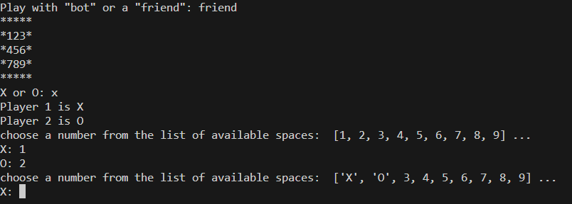

This project is a terminal-based implementation of the classic game Tic Tac Toe,
designed for quick and easy gameplay from the command line.
The game detects winning combinations (horizontal, vertical, diagonal) or a tie if their are no more open spaces left.
The game has clear prompts and updates after each turn.
The prompts include but are not limited to:
Allowing users to choose who they would like to play with - a robot or a friend (human).
Allowing the first player to choose their icon - x or o.
The updates include but are not limited to:
Display available spaces on the board and select a corresponding number
Announcing a winner or declaring a tie.
A restart prompt when the game ends.